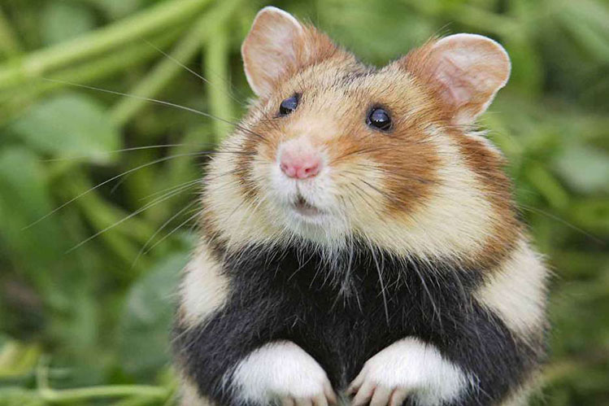

Это страница про хомяков
Хомяки́ — подсемейство грызунов семейства хомяковых. Включает 19 видов, относящихся к семи родам. Стали популярными домашними питомцами. Самым известным видом хомяка является золотой или сирийский хомячок, который чаще всего используется в качестве домашних животных. Википедия Продолжительность жизни: Хомячок Роборовского: 2 – 3 года, Китайский хомяк: 2 – 3 года
Породы хомяков
- Хомяки обыкновенные
- Джунгарские (джунгарики)
- Сирийские
- Китайские
- Кэмпбелл
- Хомяки Роборовского